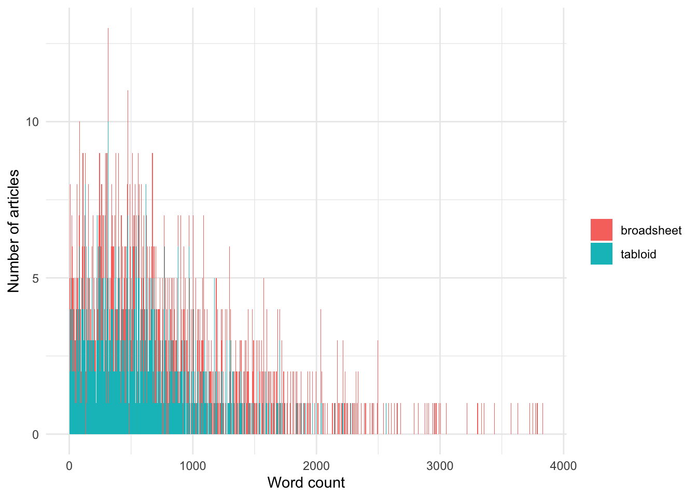

Showcase counts vs frequncy comparison
The mean word count of articles in the Australian corpus is:
- broadsheet: 810
- tabloid: 502
Let’s generate some word counts and then see what happens with data where we have one instance of a particular language type in each article.
Let’s plot these:
Code

Now, let’s generate a frequency per thousand words for each of these articles, assuming they each have one instance of the language type (so from a journalist’s perspective, they’ve used the same number of instances in each article).
Code
broad_freq <- 1000/broad_wc
tabl_freq <- 1000/tabl_wcNote that we observe a SIGNIFICANT difference between the two samples, even though we have simulated them to each feature only ONE instance of the preferred language type.
The Welch Two Sample t-test testing the difference between broad_freq and tabl_freq (mean of x = 5.35, mean of y = 5.59) suggests that the effect is negative, statistically not significant, and very small (difference = -0.24, 95% CI [-2.55, 2.08], t(1356.91) = -0.20, p = 0.842; Cohen's d = -9.70e-03, 95% CI [-0.11, 0.09])Using a non-parametric test does not improve the situation:
Code
mydistribution_custom <- coin::approximate(nresample = 1000,
parallel = "multicore",
ncpus = 8)
fp_test(
wc1 = broad_freq,
wc2 = tabl_freq,
label1 = "broadsheet",
label2 = "tabloid",
dist = mydistribution_custom
)
Approximative Two-Sample Fisher-Pitman Permutation Test
data: wc by label (broadsheet, tabloid)
Z = -0.20015, p-value = 0.851
alternative hypothesis: true mu is not equal to 0Note, however, that using the Chi-square goodness of fit allows us to avoid this issue, when considering the number of articles in each group:
Code
Chi-squared test for given probabilities
data: c(length(broad_wc), length(tabl_wc))
X-squared = 0, df = 1, p-value = 1This does remain an issue when using the Chi-square goodness of fit test when considering the total number of instances: